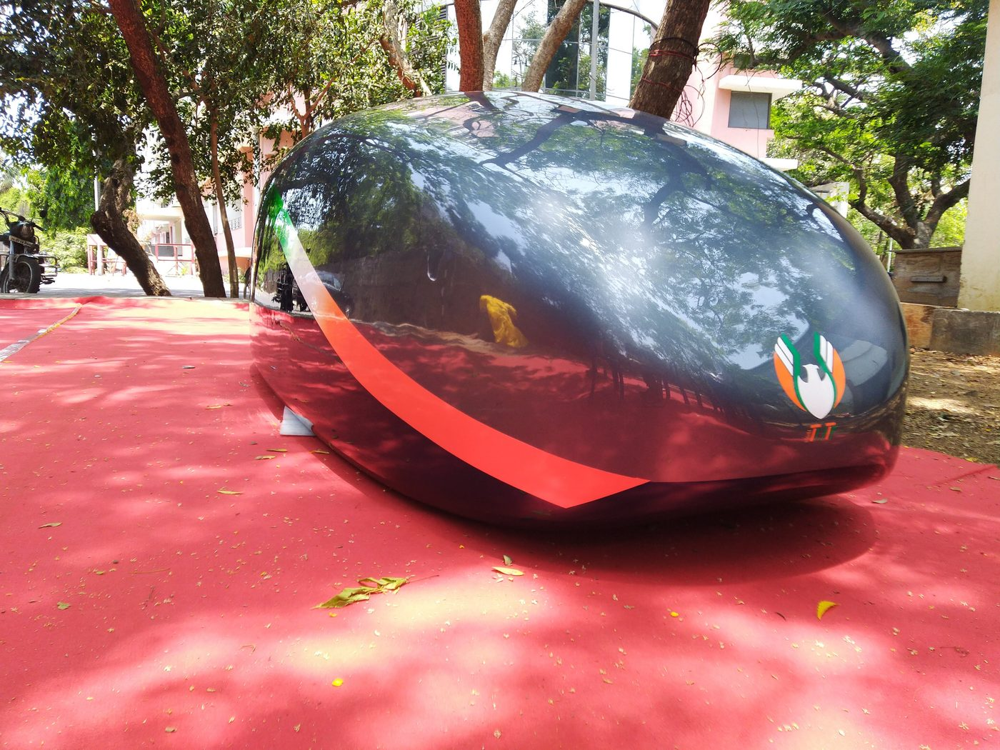

End-to-end ownership of a flagship ₹20L composite fairing program
Executed at IC&SR, IIT Madras (sponsored by Indian Railways under the HyTech Center of Excellence for Hyperloop Technology) between September 2023 and April 2024 (building on initial baseline CFD benchmark validation from February to August 2023), I directed the end-to-end engineering and manufacturing of the ₹20 lakh Hyperloop Top Hat composite aerodynamic fairing.
The objective was to design, tool, and manufacture a lightweight, aerodynamically contoured 3.0 m × 1.1 m × 1.1 m composite shell capable of reducing aerodynamic drag by 35% (to Cd ≈ 0.25), withstanding operational handling loads, and integrating cleanly onto the levitation pod chassis within strict mass (60 kg) and budget limits.
The completed fairing was integrated at the 8.6 m test facility at NCCRD, IIT Madras, and showcased in operation to the Hon'ble Minister of Railways in March 2025.

Final assembled Top Hat composite fairing mounted on the Hyperloop pod at NCCRD, IIT Madras, ready for integration testing inside the 8.6 m vacuum test facility.